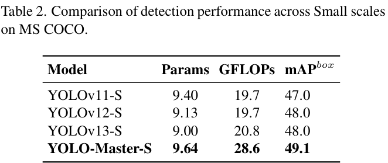
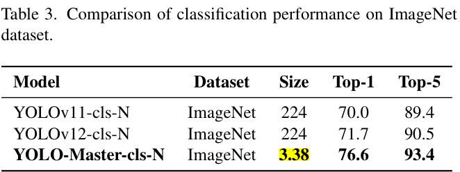
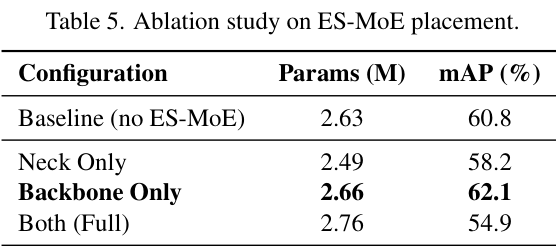
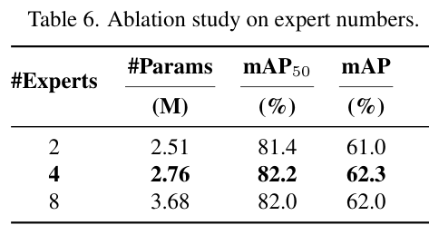

PAPER READING
arXiv 2025 · 腾讯优图 & 新加坡管理大学
YOLO-Master
MOE-Accelerated with Specialized Transformers for Enhanced Real-time Detection
把实例级条件计算引入轻量 CNN 实时检测器：ES-MoE 以「训练期软 Top-K、推理期硬 Top-K」的分阶段路由按场景复杂度分配专家，COCO 上以 1.62 ms 延迟取得 42.4% AP，比 YOLOv13-N 高 0.8 mAP 且推理快 17.8%。
Xu Lin · Jinlong Peng · Zhenye Gan · Jiawen Zhu · Jun Liu（前两位共同一作）
Tencent Youtu Lab（腾讯优图实验室） · Singapore Management University（新加坡管理大学）
实时目标检测
混合专家 MoE
条件计算
五基准验证
arXiv:2512.23273
Contributions
核心贡献：给实时检测器装上条件计算
01
首个 MoE 条件计算框架
面向实时目标检测提出 MoE 框架，按输入复杂度动态激活部分专家，从根本上跳出静态精度-效率折中，而不是继续堆骨干或颈部模块。
02
高效稀疏 ES-MoE 块
多感受野深度可分离卷积专家组 + 轻量动态路由网络：训练期软 Top-K 保梯度连续，推理期硬 Top-K 保真实稀疏。
03
面向检测的负载均衡
以负载均衡监督防止专家坍缩，训练期让全部专家被充分利用，部署期仍保持严格稀疏，两者互不冲突。
五个基准一致领先：相对 YOLOv13-N 的 mAP 增益为 +0.8 COCO · +1.4 VOC · +2.1 VisDrone · +1.5 KITTI · +0.7 SKU-110K，COCO 上 42.4% AP 仅需 1.62 ms，推理快 17.8%。
Motivation
静态稠密计算：所有输入付同样的账
实时检测要求在极低时延内完成定位与分类，精度-速度平衡直接决定系统能否落地；YOLO 系列的近期改进集中在骨干表示增强与颈部多尺度融合两条线上，但共享同一个根本限制。
A
静态稠密计算
无论输入复杂与否，所有图像都走完全相同的网络通路、消耗完全相同的计算预算；稀疏大目标的简单场景与密集小目标的复杂场景被一视同仁，既浪费算力又损害特征纯度。
B
容量在设计期锁死
计算预算与网络容量在训练前固定：面向复杂城区调优的检测器在简单高速场景下过参数化，面向效率调优的检测器又难以应付困难样本。
C
MoE 迁移仍是空白
大语言模型的稀疏激活已证明条件计算可行，但分类的路由作用于全局表示，检测要面对多尺度空间特征与变化的目标密度；已有 ViT 检测器的 MoE 尝试计算开销不适合实时。
切入点收窄为：暂未有工作把实例级条件计算引入轻量 CNN 实时检测器，并按输入复杂度动态分配模型容量。
Method 01
整体框架：ES-MoE 嵌入骨干与颈部
上方为主干流水线，ES-MoE 以 Conv-ES-MoE-Conv 的形式嵌入骨干与颈部，头部在 P3、P4、P5 三层预测；下方为 ES-MoE 内部信息流：输入特征先经动态路由网络与 Softmax 门控得到权重，Top-K 选择的专家输出再做加权聚合；右侧的决策逻辑按运行阶段在 Standard、Soft Top-K（训练）与 Hard Top-K（推理）三种路由策略间切换。
Method 02
门控权重与加权聚合
给定输入特征图 X ∈ ℝC×H×W，动态路由网络先提取路由特征，Softmax 门控据此计算每个专家的门控权重：
Gating weights
wi = exp(gi(X)) ⁄ Σj=1E exp(gj(X))，i = 1, 2, …, E
gi(·) 为第 i 个专家的门控函数，E 为专家总数。
按权重选出最高的 top-K 个专家（K ≪ E 以保证稀疏激活），其输出经加权聚合得到增强特征图：
Weighted aggregation
Y = Norm( Σi∈TK wi · Experti(X) )
TK 为 top-K 选中专家的索引集合，Norm(·) 为稳定聚合特征的归一化操作。
这等价于让每个空间区域只为自己需要的专家付费：求和只覆盖 TK 中的 K 个专家，未入选专家对输出零贡献，稀疏性直接进入前向计算；门控权重由输入内容决定，不同输入激活不同专家组合 —— 这正是条件计算的含义。
Method 03
高效专家组与多感受野
Efficient expert
Experti(X) = DWconvki, Cin → Cout(X)
ki 为第 i 个专家的卷积核大小；专家输出保持 Cout×H×W，再按路由权重聚合 YMoE = Σi=1E ωiYi。
- 以深度可分离卷积为基本构建块替代标准卷积，把逐通道空间滤波与逐点通道整合解耦，相对标准卷积显著降低参数量与计算量。
- 借鉴 Inception 的多核思路，配置 ki ∈ {3, 5, 7, …} 等奇数核覆盖一段感受野谱；路由在选专家的同时也决定了特征变换的容量与上下文范围。
- 各专家有效感受野不同，使模型能在不同空间范围内自适应聚合上下文；DWconv 保证即使 E 较大，专家组的总参数量与计算量仍可控。
- ES-MoE 因此可以 Conv-ES-MoE-Conv 的形式插入骨干或颈部的任意位置，输出的 YMoE 直接交回后续卷积。
Method 04
轻量门控网络：不让路由本身成为瓶颈
路由权重应来自全局上下文而非局部特征，故先用全局平均池化把输入压缩为紧凑描述子 P = GAP(X) ∈ ℝC×1×1；再由两层 1×1 卷积加非线性激活构成参数高效的门控网络：
Logits computation
Λ = Conv1×1out=E( SiLU( Conv1×1out=Cred(P) ) )
引入通道缩减比 γ = 8，中间通道数 Cred = max(C/γ, 8)；Λ ∈ ℝE×1×1 为 E 个专家的统一 logits。
- 瓶颈结构：中间通道数比输入通道小 γ 倍，门控自身的参数与计算被约束在很低量级。
- 与分辨率解耦：生成 logits 的复杂度只取决于通道数 C 与专家数 E，与空间尺寸 H×W 无关，骨干与颈部的高分辨率特征图不会拖慢路由决策。
全局描述子保证整幅特征图获得统一指导，而两层 1×1 瓶颈让「决定用哪些专家」的开销远小于专家本身的计算，这是 ES-MoE 能嵌进实时检测器的前提。
Method 05
分阶段路由：训练软 Top-K，推理硬 Top-K
训练期 · Soft Top-K
Ωtrain = (Ω′ ⊙ MK) ⁄ ( Σj (Ω′)j(MK)j + ε )
先 Softmax 得 Ω′，取 top-K 索引构造二值硬掩码 MK，逐元素相乘后重归一化；权重仍经由 Ω′ 对 logits 保留连续梯度。
推理期 · Hard Top-K
Ωinfer,i = exp(Λi) ⁄ Σj∈IK exp(Λj)（i ∈ IK），否则 0
直接对 top-K 个 logits 做 Softmax，其余 E−K 个专家权重严格置零，真实调用 K 个专家以获得硬件加速。
例：E = 4、K = 2、Λ = (2.0, 1.0, 0.5, 0.2)，则 Ω′ ≈ (0.569, 0.209, 0.127, 0.094)，重归一化后 Ωtrain ≈ (0.732, 0.268, 0, 0)，而 Ωinfer ≈ (0.731, 0.269, 0, 0)。两种模式权重数值接近，但训练期梯度连续、推理期只调用 2 个专家（50% 稀疏）；模型按 self.training 在两者间动态切换。
Method 06
损失函数：检测损失 + 负载均衡
Total loss
LTotal = LYOLO + λLB · LLB， LYOLO = Lcls + Lloc + LDFL
检测损失沿用 YOLOv8 的分类、定位与 DFL 三分量；λLB > 0 控制负载均衡项的贡献。
Load balancing
LLB = (1/E) Σi=1E ( μi − 1/E )2
μi 为第 i 个专家在全部空间位置上分到的训练路由权重占比（对当前 batch 求平均），理想值为均匀分布 1/E。
- 针对专家坍缩：路由网络倾向于把多数输入分给少数初始化更好的专家，MSE 形式直接惩罚 μi 与 1/E 的偏差。
- 损失只作用于训练期的 Ωtrain，监督门控与路由网络，不改变专家结构；推理期硬 Top-K 仍保持真实稀疏，训练期均匀监督与部署期稀疏激活互不冲突。
Experiments 01
实验设置：五个基准与统一训练配方
PASCAL VOC
2007+2012
16.5k 图 · 20 类
- 基线为 YOLOv12-Nano（宽度缩放 0.5）并集成 MoE 模块；全部模型在 640×640 分辨率下训练 600 个 epoch。
- SGD + 余弦学习率调度，总 batch size 256；增强含 Mosaic（p=1.0）、Copy-Paste（p=0.1），Nano 变体关闭 MixUp。
- 指标为 mAP50:95 与 mAP50；效率报告激活 K 个专家后的参数量、延迟与 FPS，按 YOLOv12 基线的标准硬件配置以 FP16、batch size 1 测量。
五个基准覆盖从 1 类密集货架到 80 类通用场景、从地面街景到无人机视角，用来检验不同目标密度与视觉域下条件计算是否都成立。
Experiments 02
四场景定性对比：小目标、遮挡与密集
列从左到右为 YOLOv10-N、YOLOv11-N、YOLOv12-N、YOLOv13-N 与 YOLO-Master-N。第一行草地上的远处小动物，v10 与 v11 完全漏检，v12 以 0.47 的低置信度检出、v13 提升到 0.53，本文以 0.65 到 0.82 的置信度准确定位；第二行海岸礁石旁的遮挡人物，仅 v11 与本文方法检出，本文定位更准；第三行剪羊毛的重叠场景，本文平均置信度 0.85 对 v13 的 0.77；第四行餐桌密集物体，早期版本漏掉大量小件，本文以 0.87 到 0.97 的置信度完整覆盖。可见尺度自适应的专家路由在小目标、遮挡与密集场景上收益最明显。
Experiments 03
五基准主对比：Nano 级全面领先
YOLO-Master-N 在五个基准上全部领先，相对 YOLOv13-N 的 mAP 增益为 +0.8（COCO）、+1.4（VOC）、+2.1（VisDrone）、+1.5（KITTI）、+0.7（SKU-110K），其中 VisDrone 与 KITTI 增益最大，印证了面向小目标与精确定位的设计；在平均每图 147 个对象的 SKU-110K 上取得 58.2% mAP，证明拥挤场景下的有效性。
COCO 42.4 AP
VisDrone +2.1
SKU-110K 58.2
延迟 1.62 ms
Experiments 04
精度-延迟权衡：落在 Pareto 前沿
- YOLO-Master-N 以 42.4% AP 与 1.62 ms 延迟落在 COCO 精度-延迟的 Pareto 前沿上。
- 比 YOLOv13-N（41.6% AP、1.97 ms）快 18%，仅比最快的 YOLOv11-N（1.50 ms）慢 8%。
- 与同延迟量级的 YOLOv12-N（40.6% AP、1.64 ms）相比，精度高出 1.8 个点。
提升精度的同时维持了效率-精度平衡：多出来的容量只花在困难样本上，典型输入仍保持在实时区间。
Experiments 05
下游任务泛化（一）：检测 Small 与分类

检测侧：YOLO-Master-S 以 9.64 M 参数取得 49.1% mAP box，刷新 small 规模纪录。

分类侧：YOLO-Master-cls-N 取得 76.6% Top-1 与 93.4% Top-5，比 YOLOv11 与 YOLOv12 分别高 6.6% 与 4.9%，说明骨干特征表示足够强。
Experiments 06
下游任务泛化（二）：COCO 实例分割
YOLO-Master-seg-N 的 mAP mask 达到 35.6%，比 YOLOv12-seg-N 高 2.8%；同表 mAP box 也从 39.9% 提升到 42.9%，定位与掩码预测同时改善。
把消融得到的最优配置直接扩展到分类与分割即可获得一致增益，说明条件计算带来的收益不局限于检测单一任务，架构本身具有通用性。
Experiments 07
消融（一）：插入位置与专家数量

仅插入骨干取得最佳的 62.1% mAP（2.66 M 参数），比基线 60.8% 高 1.3%；仅插入颈部掉到 58.2%，骨干与颈部同时插入更崩到 54.9%（论文归因于级联路由的冲突梯度）。

4 个专家以 2.76 M 参数取得 62.3% mAP 与 82.2% mAP50；2 个专家容量不足掉 1.3%，8 个专家参数增加 33% 却无增益，表明中等专家多样性已足够。
Experiments 08
消融（二）：Top-K 选择与稀疏度
K=2 在 50% 稀疏度下取得最佳稀疏配置的 61.8% mAP；K=1 容量不足掉 0.5% 到 61.3%，K=3 与 K=2 持平（61.8%），K=4 全激活得 61.9% 但已无稀疏收益。这与视觉任务中 K=2 之后收益递减的 MoE 文献结论一致。
因此默认 E=4、K=2：一半专家被真实调用，精度不降而推理计算量减半——分阶段路由的「硬稀疏」正是从这里兑现加速。
Experiments 09
消融（三）：DFL 与 MoE 损失的取舍
完全移除 DFL、只保留权重 1.5 的 MoE 损失（Config 5）取得最佳 62.2% mAP，而 DFL 与强 MoE 损失并存的 Config 4 只有 61.4%；论文假设两者梯度冲突——DFL 强制均匀的分布细化，MoE 损失鼓励实例自适应的专家专业化——移除 DFL 后冲突消失，MoE 损失同时接管回归与专家专业化的引导。
这一结论并不只是精度数字：它把「MoE 损失可以取代 DFL 角色」变成了可复现的配置选择，也解释了为什么更强的均衡损失反而更差。
Visualization
训练动态：梯度竞争直接写在曲线上
六个子图分别给出 DFL 损失、MoE 损失、验证 mAP、总损失、MoE 损失演化与 mAP 收敛曲线。Config 4（DFL + MoE λ=1.5）的 MoE 损失曲线出现剧烈振荡，而 Config 5（仅 MoE）平滑收敛，验证 mAP 曲线也稳定爬升到 62.2%，高于 Config 1 的 61.9%。可见损失项之间的梯度竞争会直接反映在训练曲线上，为「MoE 损失可以取代 DFL 角色」提供了过程性证据。
Summary
优点和创新点
1
静态稠密 → 实例级条件计算
训练期软 Top-K 保梯度、推理期硬 Top-K 保真实稀疏，用分阶段路由同时拿到优化稳定与部署加速，是实时检测里少见的条件计算落地方式。
2
负面结论 + 清晰归因
以面向检测的负载均衡损失防止专家坍缩，并通过位置消融给出「骨干颈部同时插入反而退化」的负面结论与梯度冲突归因，设计原则清晰可信。
3
证据链完整
五个基准一致提升且增益集中在 VisDrone 等密集小目标场景，并扩展到分类与分割验证架构通用性，定性图组与训练曲线互相印证。
原文展望：这一条件计算范式可迁移到检测之外的视觉任务，为资源受限设备上的实时视觉系统提供自适应架构。
arXiv:2512.23273
腾讯优图 & SMU
github.com/isLinXu/YOLO-Master
感谢观看